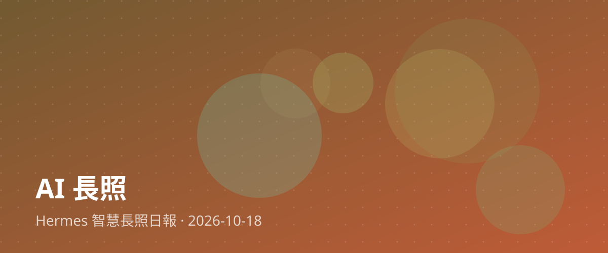

用AI串聯醫養照護：打造智慧長照新未來

隨著人工智慧技術快速發展，如何將AI應用於醫療與養護照護的串聯，已成為當前高齡社會的重要課題。近期「AI串聯醫養照護 打造智慧醫療新生態」的報導指出，透過科技整合醫療資源與日常照顧，能讓長者的健康數據得到更即時的追蹤與分析，進一步預防潛在健康風險，讓照護模式從「事後治療」轉為「事前預防」。
對台灣的長照現場與家庭照顧者而言，這項發展意義深遠。長期以來，照顧者往往承受龐大的身心壓力，隨時擔心長者突發狀況。若能透過AI系統協助監測與串聯醫療院所，不僅能分擔照顧者的焦慮，也能減少不必要的奔波。對於正想投入長照產業的夥伴來說，這代表未來的照護工作不再只是單純的勞力付出，而是需要結合科技工具，提供更具專業性與精準度的服務。
科技始終來自於對人的關懷。智慧長照的核心價值，從來不是取代人類的溫暖陪伴，而是透過工具的輔助，讓照顧者有更多餘裕去關注長者的心理需求。期待未來有更多溫暖而實用的科技落地，為台灣的長照生態注入源源不絕的活力與安心力量。
📰 本篇主要新聞來源
🔗 相關新聞